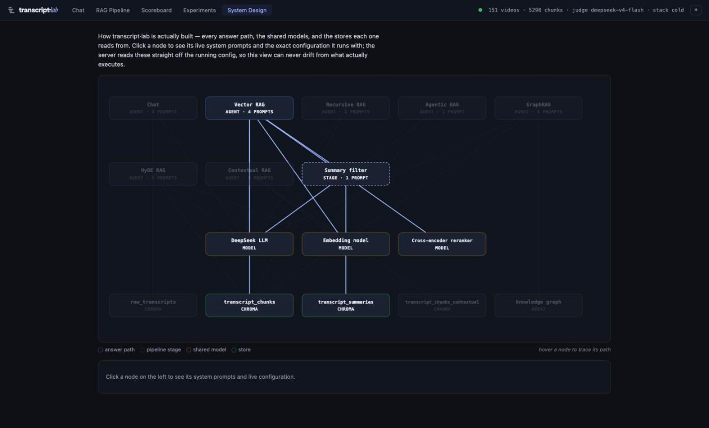
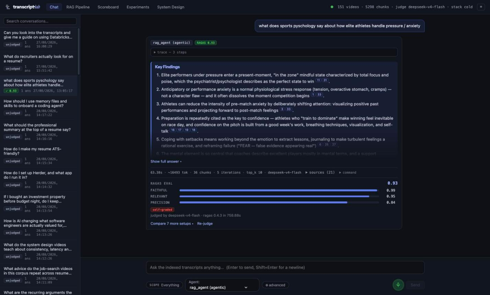
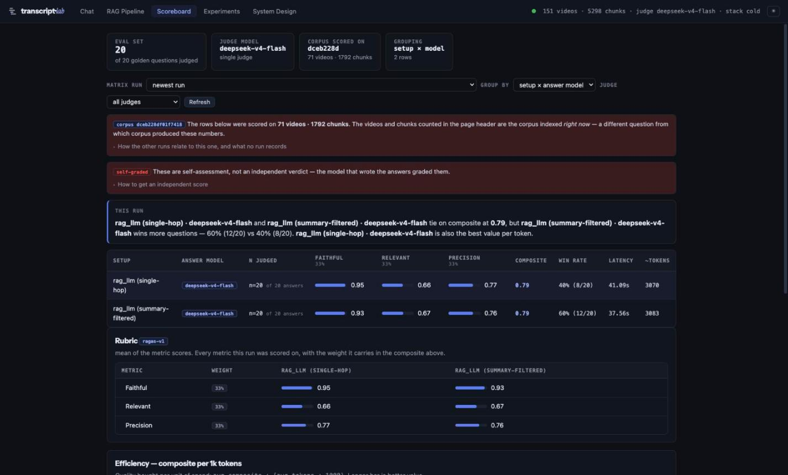
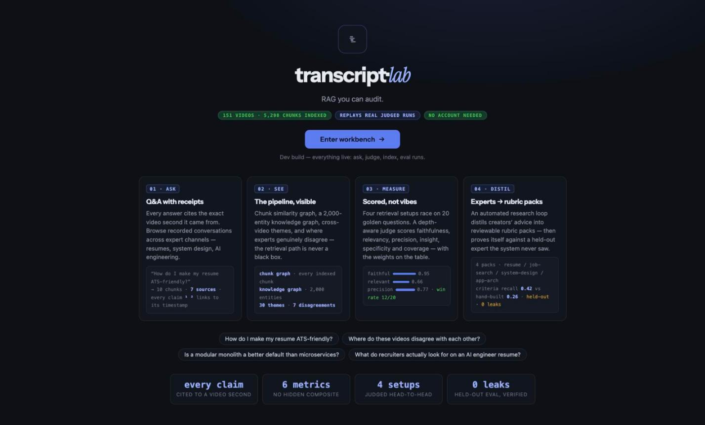

s21 plan → built → re-scored · 9 Sep 2026
The workbench now scores 28 of 31. It also caught me being wrong twice.
All four decisions came back on the recommended option and the full plan shipped — five phases, six commits, 33 files. This is the same 31-lever rubric from s21, re-run against the built app. Every claim below was verified in the running app or by a script, and where the original audit was wrong, that is recorded rather than quietly dropped.
Levers met
Up 12. Two of the three remaining are deliberate refusals, not gaps — see what's left.
Part one
Page by page, before and after
Same scoring method as s21: share of applicable levers met, minus a point per layout defect. The two pages that moved most are the two that were worst.
| Page | Was | Now | What changed | What is still true |
|---|---|---|---|---|
| System Design | 3.5 | 9.0 | Wrapped in the app's own .pagewrap; store labels split onto a kind
line so they stop colliding; nodes 200px with a 10px type floor. Graph takes the
full width until a node is picked, and hovering traces the path through it. |
Still the best idea in the app — a diagram the server renders from the running config, so it cannot drift. Now it looks like one. |
| Scoreboard | 5.0 | 8.5 | Verdict strip states who won, from the same rows. Two banners shrink to one line each; the metric panel and the 180-word footnote move behind disclosures. ~400 words → the page now reads 549 words total. | The table, rubric weights and efficiency bars are untouched. They were never the problem. |
| Chat | 6.5 | 8.5 | Six equal boxes per judged answer become three zones: verdict, prose, one meta row. Answer stats printed once instead of twice. Scope behind one chip that states its value. | Key findings, score strip, setup tabs with identity swatches and the winner highlight all kept. |
| Experiments | 5.0 | 8.0 | Sticky in-page nav across six sections. Pack explainer and stale-pack warning reduced to one line each with the detail behind them. | Still the densest page in the app, deliberately — 8,143 words of it is data, not prose. |
| RAG Pipeline | 5.5 | 8.0 | Sub-tabs on their own row; video/chunk totals dropped in favour of the topbar's;
the knowledge-graph HTTP 503 replaced with what it means and the
command to fix it. |
Channel tree and the BM25-vs-semantic ranked columns unchanged. |
| Landing | 8.0 | 9.5 | Instrument display face with the serif keyword; a staggered reveal, once; the four example questions became real buttons that enter the workbench with the question pre-filled. | Hero, numbered ASK→SEE→MEASURE→DISTIL cards and metric tiles all kept. |
Part two
The twelve levers that moved
Only rows whose verdict changed. The sixteen already met in s21 — token architecture, focus rings, semantic colour, filled primaries, layout variety, the landing's conversion shape — are unchanged and not re-listed.
| Lever | Was | Now | What made the difference |
|---|---|---|---|
| Typography | |||
| Anchor on the headline font | gap | met | Instrument Sans as display, Instrument Serif italic on the one keyword — the
lab in transcript·lab. 48 KB self-hosted, preloaded. The system stack also
stopped leading with 'Segoe UI', which meant macOS was silently
rendering Helvetica. |
| Three tiers, distinct treatment | partial | met | Display / system sans / mono are now three real voices, and thirteen ad-hoc sizes
collapsed onto a seven-step scale. Zero literal font-size values
remain in theme.css. |
| Colour | |||
| Check every combination's contrast | partial | met | scripts/contrast_audit.py — 26 pairs × 2 themes against WCAG AA,
exits non-zero on failure. It found a pre-existing failure nobody knew about:
--bad on --bad-dim at 4.49:1, a hair under. Fixed. |
| A distinct visual identity | gap | met | Neutrals and accent shifted off GitHub's exact values toward cool-slate/indigo.
good/warn/bad and the six pinned setup identity colours deliberately
untouched — they label which agent answered, in stored history and committed
screenshots. |
| Hierarchy & the premium layer | |||
| One main character per section | gap | met | Chat's judged answer went from six peer boxes to three zones; the Scoreboard now opens with a verdict instead of nine equal panels. |
| Whitespace / cramming | partial | met | ~690 words of standing prose moved behind labelled disclosures. Data density deliberately unchanged. |
| A duration token on every interaction | gap | met | --dur:200ms on the six shared interactive classes. 200 rather than
s20's marketing 300: a control that lags its own click reads as slow software. |
| Respect prefers-reduced-motion | gap | met | The block the file never had. --dur collapses and both infinite
animations — the streaming pulse and the idle mic glow — stop. |
| Staggered reveals | gap | met | Landing only, 60ms apart, once. Opacity and transform with
fill-mode: backwards, so an animation that never fires leaves the
finished page rather than an invisible one. |
| Nothing overflows or clips | defect | met | Two real defects fixed (see corrections). A third, found by the post-build sweep:
below ~1100px the topbar status pushed the theme toggle off screen —
.topstat had overflow:hidden but no
min-width:0. |
| Unique & operating discipline | |||
| One signature moment | gap | met | The live-config graph, full width, with a path trace on hover. See the evidence below — and the bug it hid. |
| A design rules file | partial | met | frontend/DESIGN.md: the token contract, the pinned colours and why,
the ten-item never-list, where each fact lives, and the pre-ship checks. |
Part three
Evidence
Captured from the running app after the final build. Note that this browser has the Dark Reader extension installed, which repaints pages — so these show layout and type faithfully, but colour judgements were made from computed token values instead.


63.38s · ~16493 tok · 36 chunks · 5 iterations · top_k 10 · deepseek-v4-flash
— with sources and command as inline disclosures. Those figures used to print twice per
answer. The composer's resting state is now a single row.

Part four
Where the s21 audit was wrong
Before building, I checked the four "defects" against the pre-change build. Two were real. Two were artifacts of reading a downscaled screenshot whose right edge cut the image — the layout was fine and I had claimed otherwise. Recording it here because a rubric that only ever confirms itself is worthless.
Claimed · not real
"The pipeline header overflows at 1615px"
Measured .pipe-head scrollWidth against
clientWidth at 1615 / 1440 / 1280 / 1100 / 980 / 860 on the original
build: no overflow at any width, and the sub-tabs wrap normally below 1100.
Claimed · not real
"The composer clips below the fold, unreachably"
The composer is flex: 0 0 auto in a column whose thread
takes the remaining space. Measured inside a 600px shell: the Send button sits
fully inside it. It could not have been pushed off.
What was real
.pagewrap, so its intro sat flush against
x=0.Chroma · transcript_chunks_contextual is 36 characters — about 248px of
11.5px mono centred in a 180px node on a 220px column pitch, so it ran into its
neighbour. Arithmetic, not a screenshot.The rule this produced
Now in DESIGN.md: measure before claiming
a defect. Screenshots show you where to look; the DOM tells you whether you are right.
A browser extension such as Dark Reader will also repaint the page and make any colour
judgement from a screenshot worthless — read computed token values instead.
Part five
The three that did not move
Two are deliberate refusals recorded in the never-list. One is a genuine remaining gap, and it is small.
partial · by choice
Frosted, sticky nav
The topbar is persistent but opaque. Nothing scrolls under it — the app shell is a fixed flex column, not a scrolling page — so translucency would be an effect with nothing to reveal. The Experiments in-page nav is frosted, because there content genuinely passes beneath it.
partial · by choice
Ban the four horsemen
All the named slop signatures are absent, and the palette is no longer GitHub's. Scored partial rather than met only because "system font on a dark devtool palette" remains the genre's own house style and this app still lives in that genre — the display face is what separates it, not the whole design.
gap · real
The audit is not automated
Contrast is enforced by a script; composition is not. This page is the
second hand-run score. The next step would be a design-audit skill holding
this rubric and the never-list, so "audit the workbench" is one command with a
comparable number — the pattern contrast_audit.py already proves.
What shipped, in one place
- Branch
studio-design-upgrade— 6 commits, 33 files, +1591 / −408- Phase 0
- System Design layout defects; pipeline header row; scope popover; the 503 empty state
- Phase 1
- The cut list R1–R8 — ~690 words out of the default views
- Phase 2
- Instrument Sans/Serif (48 KB, self-hosted) + the palette shift, contrast-verified
- Phase 3
- Motion token + reduced-motion, the type scale, chat's three zones, the verdict strip, Experiments nav
- Phase 4
- The graph's full width and path trace, the landing reveal,
DESIGN.md - Checks
- 528 tests · 52/52 contrast pairs · 0 overflow across 5 pages × 4 widths · typecheck + build clean
- Not merged
- The branch is committed but unpushed — no PR opened, nothing merged to main